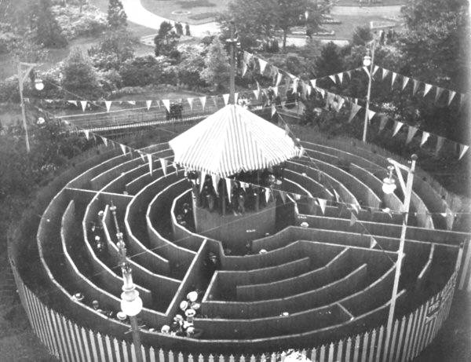

Posted on August 28, 2009
Correspondence about “Mazes We Visited — Summer of 2007”First of all, I should appologize to everyone who wrote me. I got sidetracked by other projects and I just now was able to post our correspondence. December 20, 2007 Hi Bob — thanks for the e-mail. It was a pleasure to finally meet you. I am glad you enjoyed your visit to our farm. I read with pleasure your analysis of the corn maze craze — we have always felt that the maze has to be challenging or people would never pay to come back. We make sure there are always ways to end the journey if people get tired but many come back year after year to challenge the field once again. I am sure that is why we are able to sustain our corporate client business. In November (after we closed for the season) we took a road trip to MA to visit our 2 college students. We had a few days to relax and we were looking for things to do when we discovered that the Davis maze was still open. Since we had never been there before and it was only an hour away we decided to check it out. (Remember I did not see your review till much later so it was interesting to compare notes.) I don't know if it was because it was the last weekend or the staff figured we had been there before, but we were totally confused as to what we were suppose to do. We did figure out that you could find some stamps or punch your map when you found a bridge but there was much too much going on. Yes it was interesting to climb their bridges, but we found ourselves wandering around looking at games and bridges more that figuring out the maze. We were rather disappointed. We had more fun with the logic mazes in the courtyard. We have always felt that "good" competition is good in that people who enjoy the challenges of mazes will visit many of them. But if someone has never been to a corn maze and decides to check one out and is basically just walking thru a picture in a corn field, I have just lost that potential customer. But if I get them first — they will be back and that is was it is all about. Again — thanks for visiting us. We enjoy your work. Your website is dangerous (I get stuck in a few mazes & the next thing I know an hour has gone by.....) Have a Merry Christmas and wonderful 2008! Joan Allen December 17, 2007 Robert, Thanks for sending the link to your article — interesting reading as always. A shame indeed that the invisible maze electrics were on the blink! I notice that you say that fence mazes were invented in the 1970's by Stuart Landsborough, but that's not really true. There were a number of fence mazes constructed c.1895 - 1910 by a Dutch company, both in Europe and the USA. The designs were fairly simple — based, as always, on Hampton Court — and they were circular, rather than rectangular, but they were interesting none the less. I have some splendid photos of these early fence mazes in my archive collection, and plan to write a short piece about them, and reproduce the photos, in the new Caerdroia due out early 2008. I will also be mentioning the early mirror mazes from the same time period — once again I have photos and contemporary descriptions of them, including the oldest known example (1889) in Constantinople. I will let you know when the article is published. I am currently working on the new Caerdroia, as you will gather, so will take stock of page layouts, and may add your article to the list — it will depend on space. I will be in touch. Regards... Jeff. December 18, 2007 Jeff, > I notice that you say that fence mazes were invented in the I got that idea from Landsborough's article in the 1992 Caerdroia. He didn't actually say he invented them, but he left that impression. However, I would say that those early fence mazes that just reproduced Hampton Court were not much of an accomplishment. Landsborough should get credit for being the first to create new and interesting mazes out of wooden fences. I just re-read Landsborough's article and I see that he is the one who came up with the idea of multiple goals. That's one of the things I thought led to the downfall of fence mazes. Maybe they were okay in his maze, or maybe not. The Skyline Caverns mirror maze was even worse than I said in my review. I refrained from reporting that the attendant there was cursing Adrian Fisher because the maze cost half a million dollars (back when the dollar was worth more than the euro) and the mirrors kept breaking. Someday I hope someone builds a really good mirror maze. By the way, there was a good article about mirror mazes in an old Scientific American, but I don't know what issue. Best, Bob Abbott December 19, 2007 Robert, Indeed, while Landsborough was the first to use posts and panels in a regular grid, and should be credited for that, the earlier examples were likewise clearly pre-fabricated from a stock plan to an extent. I certainly didn't know about these 15 years ago when Stuart wrote his article, but have recently managed to acquire photos of a number of examples, which combined with the recent discovery of the Dutch patent and manufacturing company foundation details, has pieced together the story. Attached is a picture of one at Wolverhampton, here in England, in 1902 — one of four different examples I have photos of — all of which are very similar. It shows the construction from wooden fence strips and timber. The tower at the middle is cute and provides both the goal and the exit path. They all have this feature — indeed, there are two that I suspect might be the same example — erected at one site, and then taken down and re-built at another. More on this in the next Caerdroia... If you find the reference for the Sci Am article, let me know — it's one I should have on file. Jeff |

|
December 19, 2007 Jeff, I think the Scientific American article was in the November 1998 issue. It was about the old maze in Lucerne, Switzerland. I no longer have that issue. Best, Bob Abbott December 17, 2007 Dear Mr. Abbott, Thanks for trying our maze park. I guess it didn't go well for you, or for us in your review, but thanks for trying it out all the same. I offer no excuses or long explanations, but I do take full responsibility for your visit to my park. At the end, if you'll read through, I do request clarification on your review so that we, if it makes sense for our guest, can change and improve to create a better experience. It appears from your other reviews that you are seeking a particular kind of maze to create an ideal experience for you/your group. That kind of maze seems to be rule-based puzzles or hard/deceptive to escape mazes. I agree with you. I find them personally enjoyable as well. We actually created, with Dave Phillips (FYI: Dave designed all our mazes. Perhaps, had you known, you'd have given a few more of them a try. They really are quite good), an incredibly hard to escape cornfield maze in 2001 that thwarted 98% of 30,000 people. Unfortunately, that's not good for business. Our experience has since been designed to appeal to a family with broad age ranges, young to old. That is why we have tough tile mazes and an easy Bamboo Forest (Did you play the Finger Fortune game?); a great corn maze scavenger hunt, and the devious Miner Max Maze. I noticed in your review that you didn't mention Miner Max Maze, which, if you tried it, would have walloped you. The bridges are one-way elements that Dave uses to send you back to the beginning. The Rope Maze alone stifles people for 20 minutes. Did you get to try it? Your review of Long Acre (Doug & Donna the owners are friends of ours) indicated you tried their corn maze, but missed our Dave-designed masterpiece. From a park owner point of view, I can't imagine a few garden hoses creating a more magical experience for guests than a Bamboo Forest either, though I understand that one is a logic puzzle, and one a scavenger hunt. Now to the Invisible Fence Maze. The Facts: It did work, we invented, designed, engineered it, built it first before anyone in the world, challenged thousands of people with it, AND, after 3 years, I'm tearing it out. It is not an attraction for someone in business, but it is a great attraction for lightning. It was struck several times costing thousands of dollars in damage and not endearing it to my heart. I would gladly help someone do it for an art installment somewhere, but I'd never recommend it for an attraction that would be visited by the thousands. (To answer a technical question, size does matter because of bending the electromagnetic field to turn corners.) That being said, I do apologize that you were not able to do it. I should have noted it was not generally open on the web site, and that was indeed my direct oversight and, again, I'm sorry to have disappointed you. I will also question the ladies on shift that day regarding food availability, again I am sorry to have disappointed you on the customer service. We went on to have our best season ever and successfully entertained tens of thousands of guests. I feel that your review was an appropriate representation of your visit, but not of our park experience as a whole. If you could see the park in October, packed to the gills with families and children laughing, solving, playing together, well, I think you'd be moved. We've made mazes accessible and challenging for guests of all ages. We've brought mazes to life! As a creator of puzzles, I'd imagine we're doing you a service by priming the pump with a cadre of children who've grown up solving mazes. We've also kept a farm in the family for 5 generations by branching into entertainment. It'd be easy to sell lots and carve up the family plot, it's not easy building an entertainment business from nothing but imagination and determination. Now, on to the fun part, if you're still reading and I hope you are, what is there to be done about it?! I would have loved to meet you in person, though I know as a reviewer you'd prefer anonymity. What would you do better/more/instead? I can handle critique, but I prefer constructive feedback. We are the largest collection of people-sized mazes in the world. We add attractions every year, and I happen to have room where the Invisible Fence Maze was... What would you like to see? Unless I missed it, you mentioned what made our park disappoint you, but you never said what would make the park better. And so, Mr. Abbott, the floor is yours... Sincerely, Hugh December 18, 2007 Hugh, It was nice of you to write, after I made all those nasty comments about your fun park. I'm sorry I missed your corn maze, but I wanted to get to your other mazes. Also, I must have been through about 50 corn mazes already. But I do know Dave Phillips' work and he had told me he designed your mazes. I have another write-up called How To Locate a Good Cornfield Maze and it mentions Dave's mazes done by Maize Quest. Thanks for the information about the Invisible Fence Maze. I still wish it could be done. You mention > I would gladly help someone do it for an art installment somewhere That's interesting, because I have often tried to get my logic mazes in an art gallery or in a Science Museum, and no one was interested. I did talk an art museum here in West Palm Beach into a maze display, so they used Adrian Fisher instead of me. The Miner Max Maze looked interesting, but we had a problem with it. I didn't want to go down the slides (I'm 74 and a little feeble), and we saw a sign that seemed to say you can go through without going down the slides. I can't remember the exact wording, but I thought it indicated there were alternate routes to the slides. My wife and I looked for these alternate routes and found none. So we figured that whoever did this maze didn't know what he was talking about, so we went no further. I probably would have tried the slides if I hadn't seen that sign. You mentioned > an incredibly hard to escape cornfield maze in 2001 that Okay, thwarting 98% of your customers is probably a bad idea, but I hope you're aware of the perils of excessive dumbing down. In the final section of my reviews, I maintain that excessive dumbing down is what killed wooden fence mazes, and it could do the same thing to corn mazes. Anyway, it was interesting to correspond with you because you're obviously someone who is serious about mazes. Best wishes, Bob Abbott Here is more correspondence about the quest to create a maze with invisible walls. It comes at the end of a page about fence mazes. |